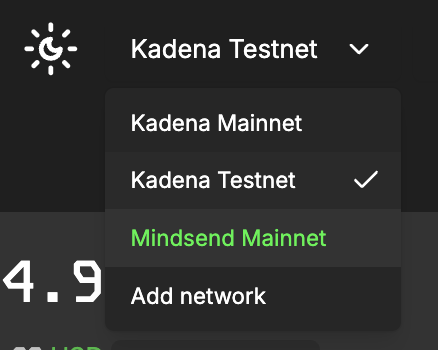
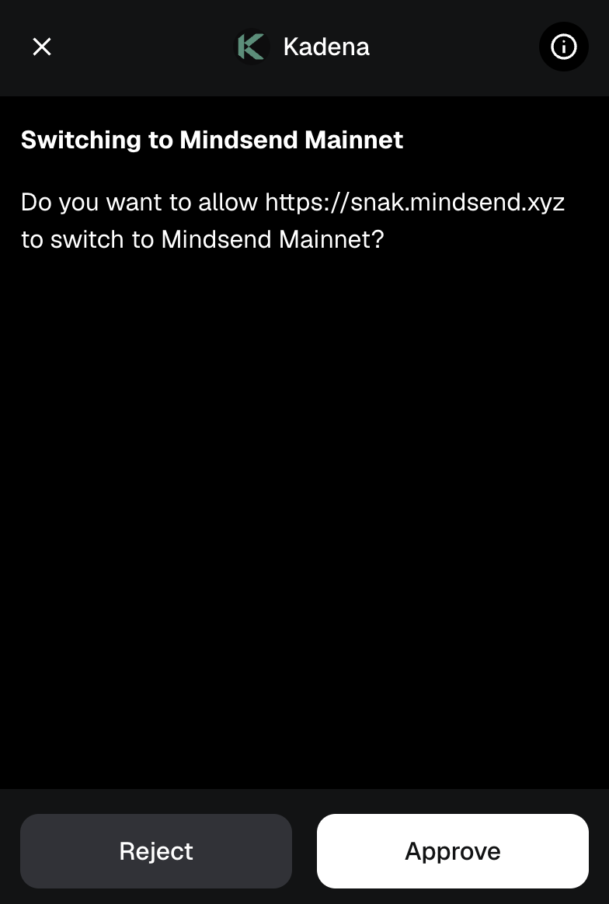
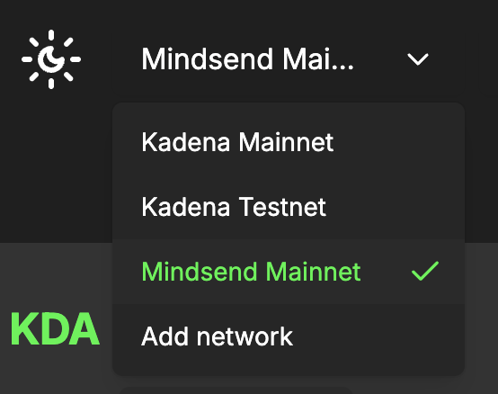

Add a Custom Network on snaK
⚠️ To add networks, Dev Mode must be enabled. Without it, the "Add Network" button is hidden.
1. Enable Developer Mode
- Open snaK.
- Toggle Dev Mode ON (top-right of the app).

2. Add Custom Network
- Open the network dropdown.
- Click Add Network.
- Fill in the fields:


| Field | Example |
|---|---|
| Name | Mindsend Mainnet |
| Network ID | mainnet01 |
| Node URL | https://chainweb.mindsend.xyz/chainweb/0.0 |
| Explorer Transaction URL | https://explorer.chainweb.com/mainnet/tx/[[txHash]] |
| Explorer Address URL | https://explorer.chainweb.com/mainnet/account/[[address]] |
| Explorer Address Transactions | https://explorer.chainweb.com/mainnet/transfer/[[address]] |
| Is Testnet? | Enable if it's a testnet |
| Transaction List URL | https://graph.kadena.network/graphql |
| Transaction List TTL | 30000 |
| Buy Page URL | (Optional) |
- Click Send.
- Approve the request in the popup.

✅ Your network is now available in the dropdown.

You can now switch to it as in the Switching Networks section.

and Voilá
